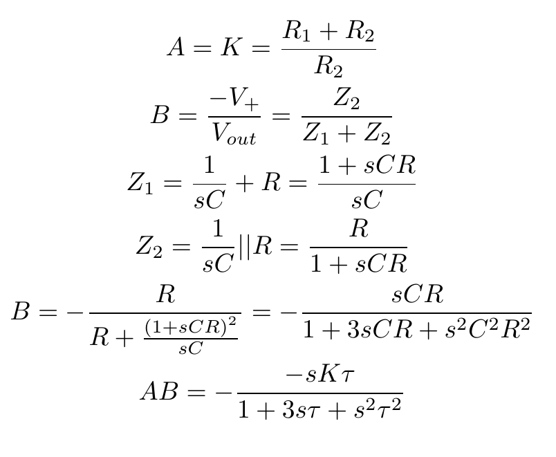
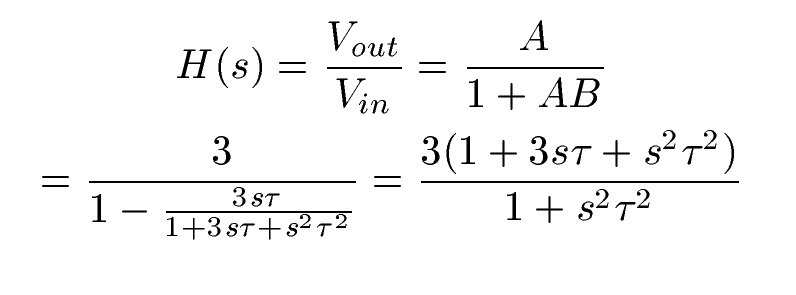
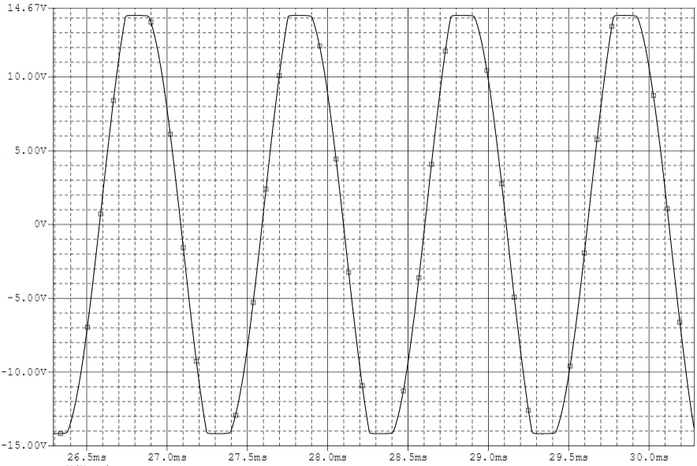
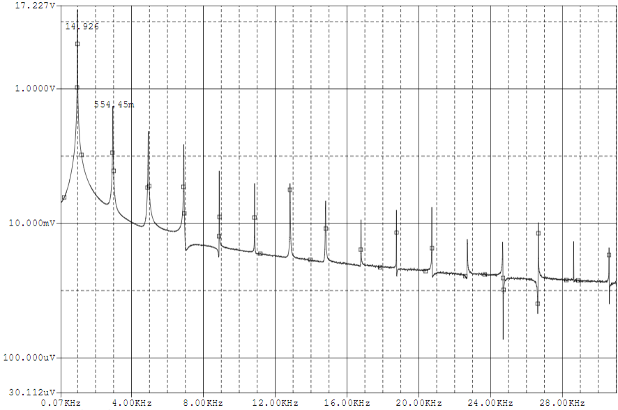
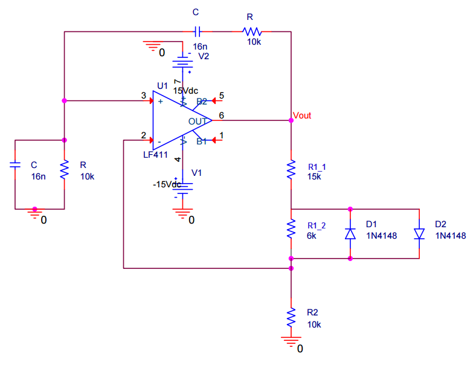
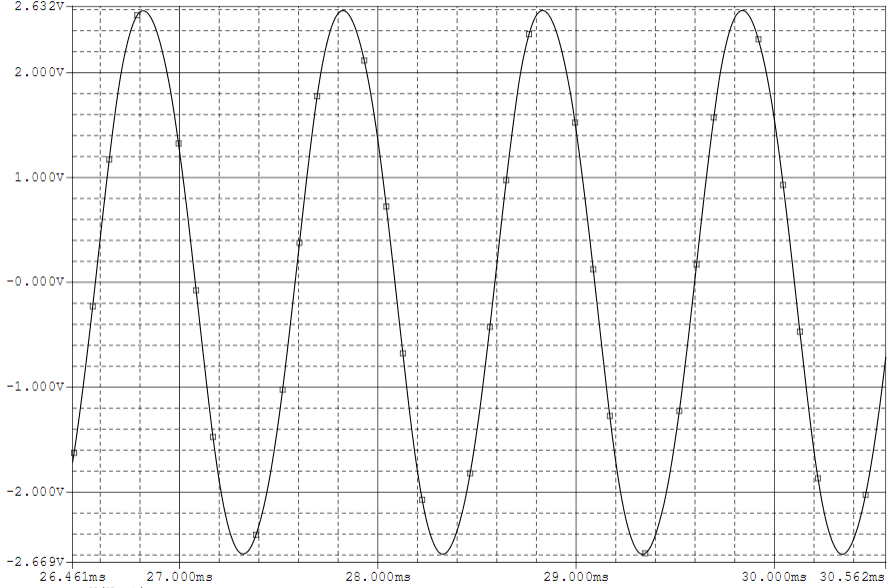
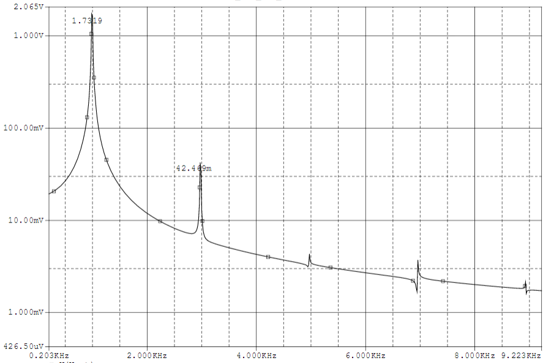

Wien-Bridge Oscillator
An oscillating system built with the Wien-Bridge architecture.
Concept:
The Wien-Bridge oscillator is a sine-wave generating oscillator. The oscillator is implemented as a positive gain amplified and pass filter with positive feedback.
Circuit Diagram:

Derivation of Operation:
Let K be the gain of the amplifier and AB be the loop gain. Additionally, let τ = RC. The gain and the loop gain can be derived as follows:

This has a zero at ω and two poles at ωo = 1/τ. |AB(ωo)| = K/3.
A Nyquist plot is a plot of the frequency response of the system. The stability of an LTI closed-loop system
can be observed by examining the Nyquist plot of the open-loop system. If the point -1+j0 is encircled by the
Nyquist plot, then the closed-loop system is unstable. If the plot does not encircle the -1+j0 point, then it
is stable. For an oscillator, the loop of the Nyquist plot ideally passes through the -1+j0 point. This places
the system on the edge between stable and unstable. For the Wien-Bridge oscillator, the Nyquist plot passes
through the -1+j0 point when K = 3. This can be seen in the Nyquist plot below.
This results in the closed-loop transfer function:
This transfer function has poles at ±j/τ. This will produce an output sine wave that oscillates from rail-to-rail at a frequency of f = 1/(2πτ). The rail-to-rail oscillation will result in the sine wave being clipped and producing additional harmonics, as shown below:
 The addition of limiting diodes on the output prevents the sine wave from clipping at the rails, providing a smoother function with fewer harmonics.
  The Wien-Bridge produced by Hewlett-Packard used a lightbulb in place of R2 which provided a soft rise to limit the output which served to reduce the amount of harmonics produced by the output limiting diodes.